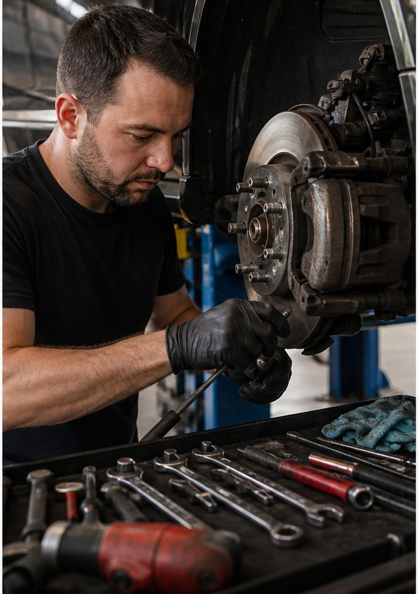

Greer auto repair
Trusted local auto service with a clearer way to call.
Brake repair, Diagnostics, Oil service, AC service, Engine repair, Preventive maintenance for Greer, SC customers.
- 4.686 Google reviews
- Auto RepairGreer, SC
- EasyTap-to-call scheduling
Services
Clear service options for real customers.
- Brake repair
- Diagnostics
- Oil service
- AC service
- Engine repair
- Preventive maintenance

Built for everyday drivers
Drivers choose repair shops faster when the services, proof, and phone number are easy to find.
John's Auto Care can lead with its 4.6-star reputation while giving customers a clear path to review services and call for scheduling.

Service finder
What brought the car in?
Brake noise should start with a same-day inspection, pad check, rotor look, and clear repair quote.
Local proof
John's Auto Care gives Greer customers review proof before they call.
- 4.6-star Google rating
- 86 public reviews
- 524 W Wade Hampton Blvd, Greer, SC
Contact
John's Auto Care
524 W Wade Hampton Blvd, Greer, SC